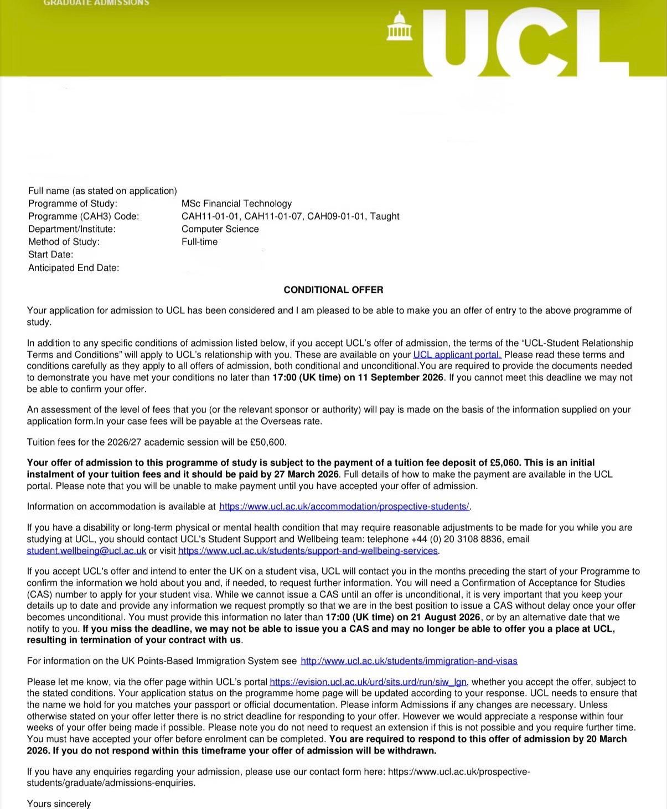
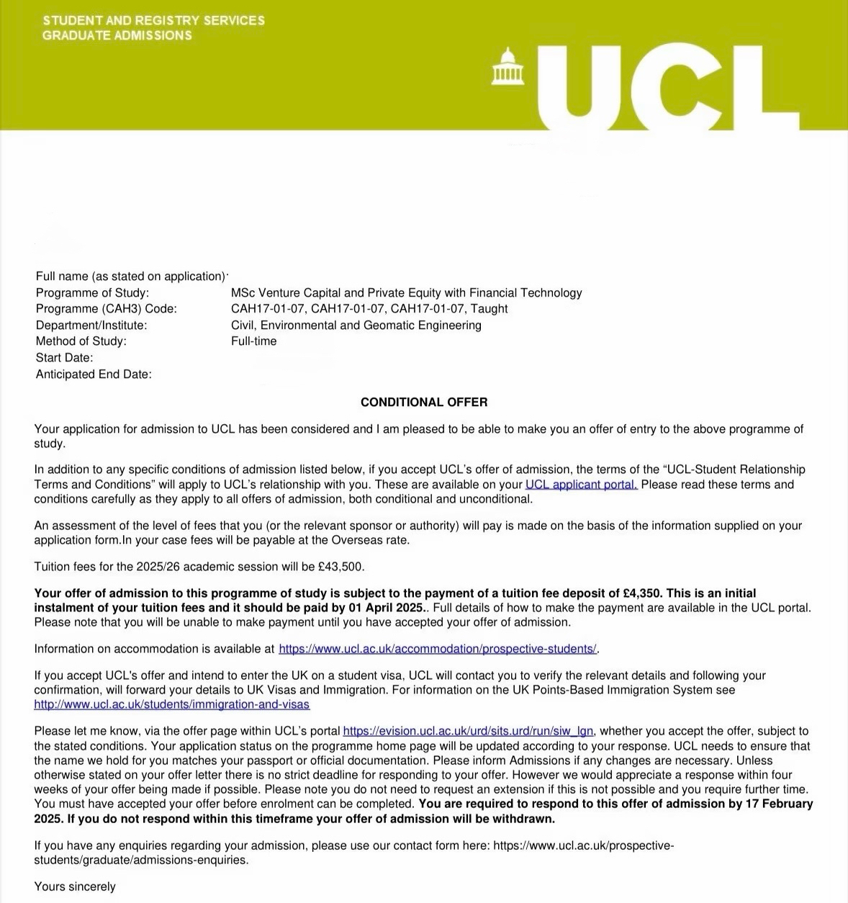
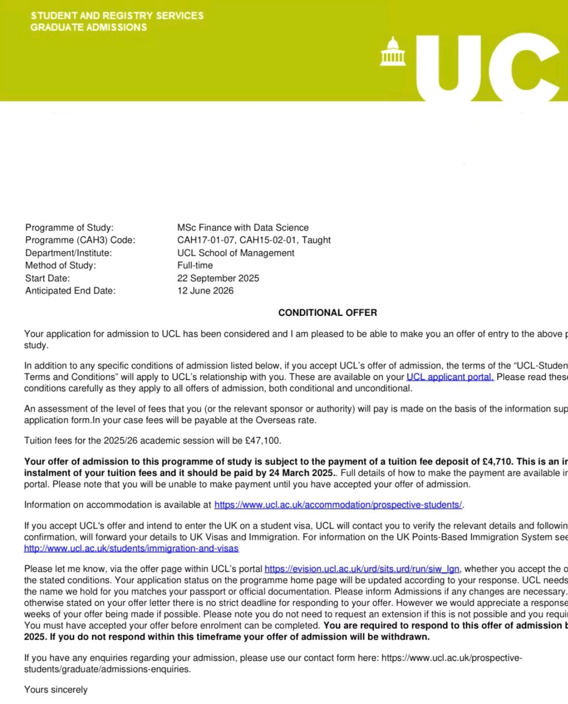
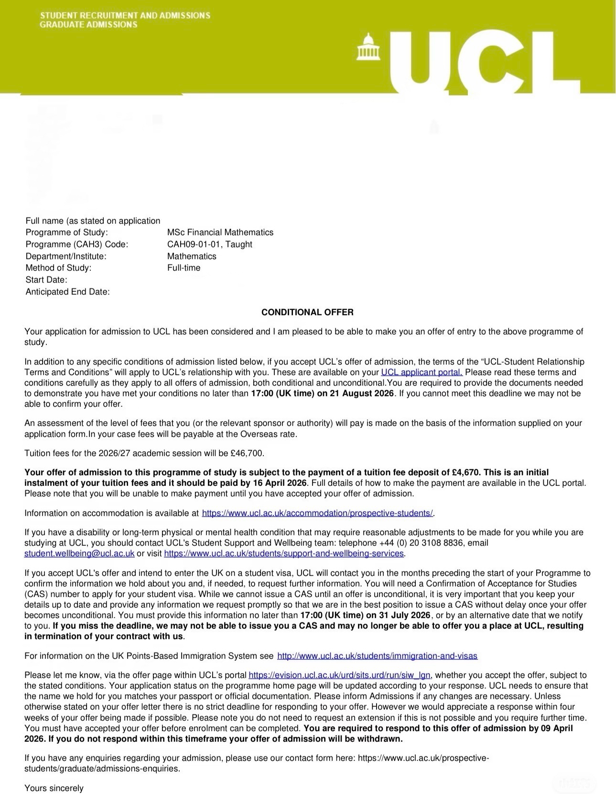
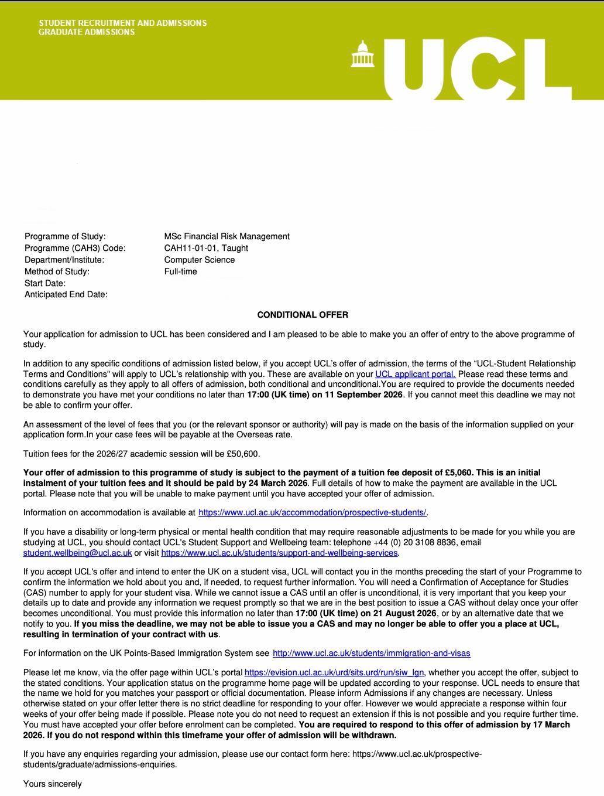

ADMISSION OFFERS
录取 Offer 与案例
按院校查看已上传的录取材料。后续材料将持续补充。
OFFER WALL
录取 Offer 展示墙
当前共 12 份材料，涵盖 4 所院校。点击图片可查看完整录取文件。
牛津大学
2 份 Offer


伦敦政治经济学院
4 份 Offer


伦敦大学学院
5 份 Offer

伦敦大学学院MSc Financial Technology 有条件录取 · 2026/27 学年

伦敦大学学院MSc Venture Capital and Private Equity with Financial Technology 有条件录取 · 2025/26 学年

伦敦大学学院MSc Finance with Data Science 有条件录取 · 2025/26 学年

伦敦大学学院MSc Financial Mathematics 有条件录取 · 2026/27 学年

伦敦大学学院MSc Financial Risk Management 有条件录取 · 2026/27 学年UNIVERSITIES
院校与录取项目
汇总已公开的 12 份录取材料，涵盖 4 所院校。点击项目查看对应 Offer。
| 院校 | 项目 |
|---|---|
| 牛津大学 | |
| 帝国理工学院 | |
| 伦敦政治经济学院 | |
| 伦敦大学学院 |